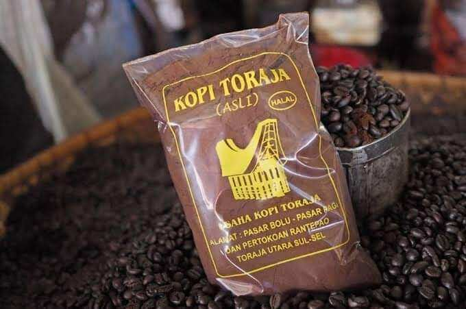

Aroma floral dan herbal, wangi bunga serta rempah lembut.
Memiliki nuansa earthy (tanah basah) yang natural,
dengan hint cokelat dan kacang yang menenangkan,
serta sentuhan manis seperti karamel atau gula aren.

Kopi Toraja
Aroma earthy yang kuat seperti tanah basah dan hutan,
dipadukan dengan rempah-rempah seperti kayu manis dan cengkeh.
Memiliki karakter cokelat hitam, kacang panggang,
serta sedikit aroma smoky dan herbal.
Kopi Kintamani
Aroma Kopi Kintamani Bali dikenal segar dan bersih, dengan karakter fruity yang cerah. Tercium wangi jeruk, lemon, dan citrus, dipadukan dengan sentuhan bunga dan manis alami. Keasaman yang ringan dan menyenangkan membuat aromanya terasa hidup, tidak pahit, dan sangat khas.
Kopi Wawena
Aroma Kopi Wamena Papua dikenal lembut, bersih, dan natural, dengan sentuhan floral yang halus, aroma cokelat ringan, serta sedikit manis earthy. Wangi alaminya terasa tenang dan seimbang, tanpa rasa pahit yang tajam, mencerminkan kesegaran kopi dari pegunungan tinggi Papua.